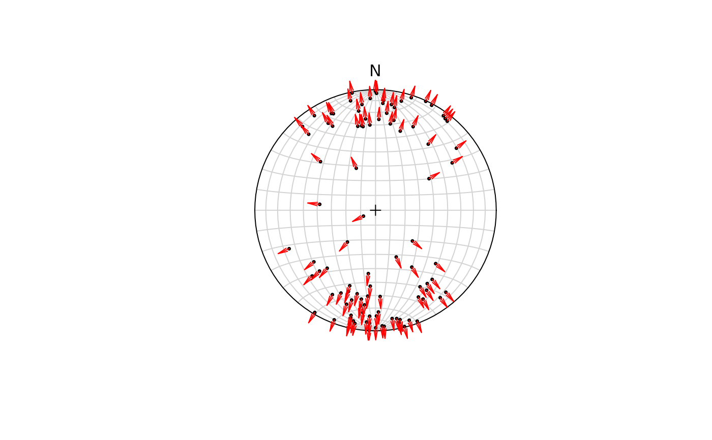

A quiver plot displays displacement vectors into pointing into the direction of movement.
Usage
stereo_arrows(
x,
sense,
scale = 0.1,
angle = 10,
length = 0.1,
upper.hem = FALSE,
earea = TRUE,
...
)Arguments
- x
object of class
"Vec3","Line","Ray", or"Plane", where the rows are the observations and the columns are the coordinates.- sense
numeric. Sense of the line on a fault plane. Either
1or-1for normal or thrust offset, respectively. The "sense" is the sign of the fault's rake (seeFault_from_rake()for details).- scale
numeric. Scales the length of the vector.
0.1by default- angle
numeric. Angle from the shaft of the arrow to the edge of the arrow head.
- length
numeric. Length of the edges of the arrow head (in inches).
- upper.hem
logical. Whether the projection is shown for upper hemisphere (
TRUE) or lower hemisphere (FALSE, the default).- earea
logical
TRUEfor Lambert equal-area projection (also "Schmidt net"; the default), orFALSEfor meridional stereographic projection (also "Wulff net" or "Stereonet").- ...
arguments passed to
graphics::arrows()
Examples
set.seed(20250411)
stereoplot()
p <- rvmf(n = 100)
points(p, pch = 16, cex = .5)
stereo_arrows(p, sense = 1, col = "red")
